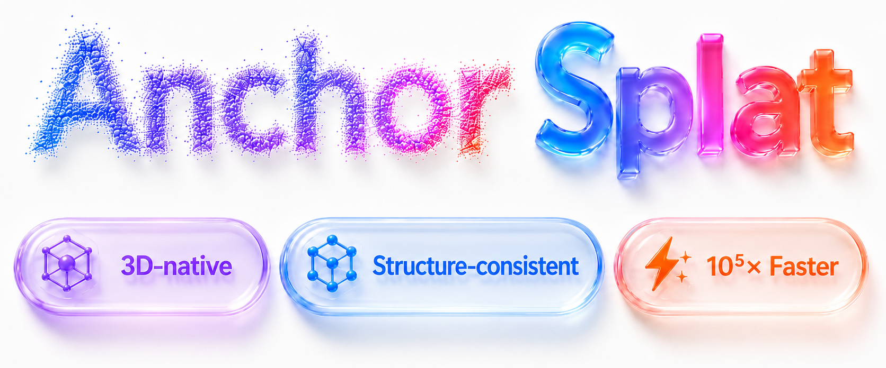

Encode primitives
Model the input 3DGS as an attribute-rich point cloud and aggregate local context with a point encoder.

ECCV 2026
1 MAIS&NLPR, CASIA 2 GigaAI 3 ShanghaiTech University 4 Tsinghua University
AnchorSplat enhances Gaussian primitives directly in 3D, replacing minutes of rendering and optimization with one network pass.
Browse benchmark scenes, generative assets, and noisy real-world captures. The final media will stay synchronized across every comparison.
Fine texture recovery with structure-consistent edges on the held-out 3DGS-SR benchmark.
The architecture keeps the valid input geometry as its foundation, then predicts local detail without iterative scene optimization.
Model the input 3DGS as an attribute-rich point cloud and aggregate local context with a point encoder.
Constrain generated primitives to the neighborhood of each input Gaussian to preserve reliable structure.
Generate controlled primitive multiplicities and learned opacity in one feed-forward pass.
AnchorSplat reaches the strongest reported fidelity on 3DGS-SR while reducing per-scene processing from minutes to milliseconds.
Code, pretrained checkpoints, processed evaluation data, and a runnable demo asset are available now.
@article{zhu2026anchorsplat,
title = {AnchorSplat: Fast and Structure Consistent Detail Synthesis for Gaussian Splatting},
author = {Zhu, Dexu and Shao, Jiangnan and Wang, Xiaofeng and Duan, Junxian and Cao, Jie and Zhu, Zheng and Huang, Huaibo},
journal = {arXiv preprint arXiv:2607.01290},
year = {2026}
}